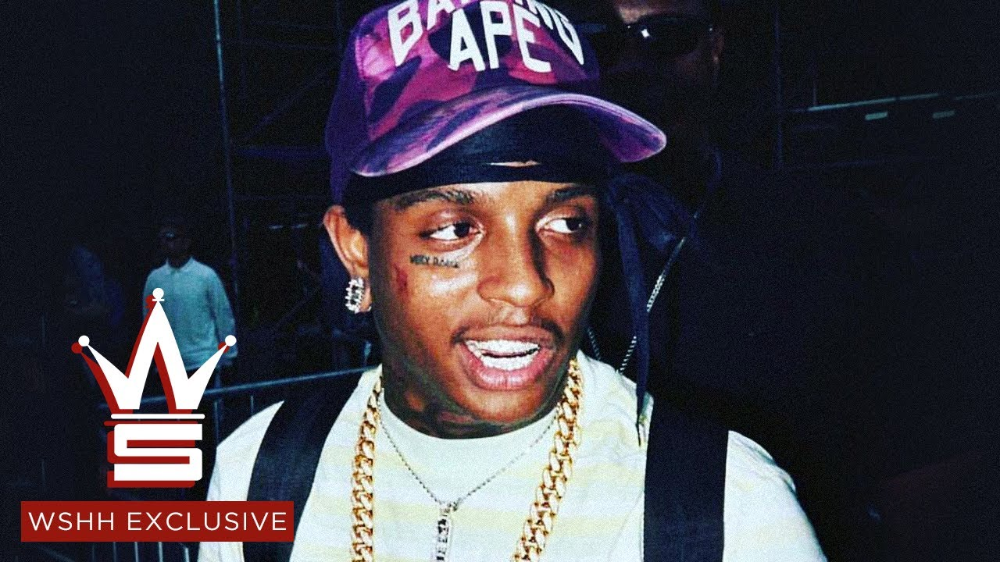

Ski Mask was born as Stokeley Clevon Goulbourne on April 18, 1996 in Broward County, Florida. He is of Jamaican and Afro-American descent. He was raised on hip-hop and Jamaican music (his father was also a rapper). In 2013, he met XXXTENTACION at a juvenile detention center, and upon release, they started a group called Very Rare, followed by another one called Members Only. Starting his career in 2015, he began by posting his music on his SoundCloud account. People liked his music and soon he became a popular rapper with his catchy tunes and lyrics. Following the success of his singles, he proceeded to release two mixtapes, ‘Drown-In-Designer’ and ‘YouWillRegret’.
. 2016 brought "Take a Step Back.” The following year, Ski Mask celebrated his 21st birthday with the single "BabyWipe."
